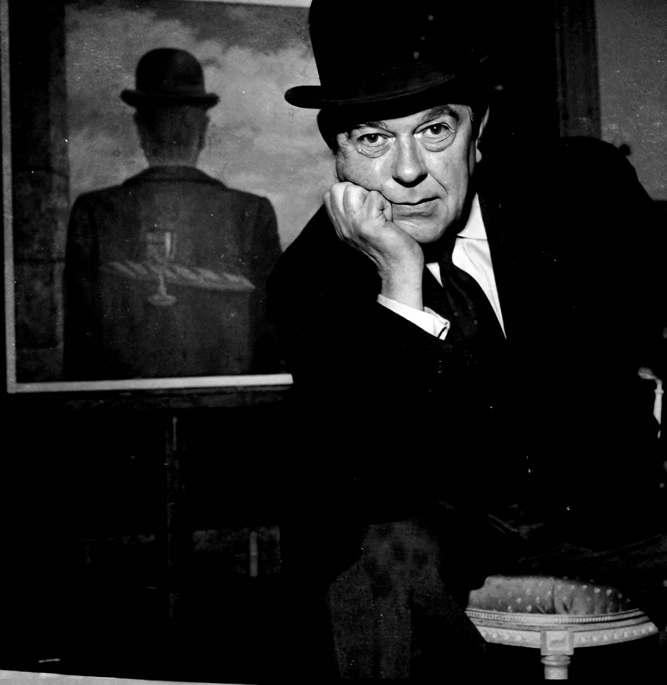
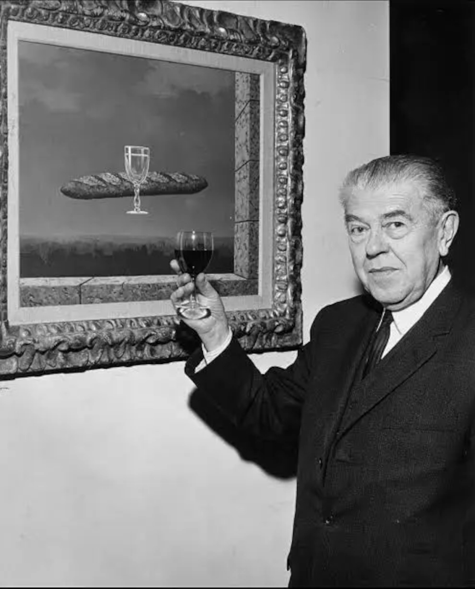

René Magritte was an internationally acclaimed surrealist artist of all time, yet
it was not until his 50s, when he was finally able to reach some form of fame and recognition for his work. René
Magritte described his paintings saying, "My painting is visible images which conceal nothing; they evoke mystery and,
indeed, when one sees one of my pictures, one asks oneself this simple question, 'What does that mean?'
It does not mean anything, because mystery means nothing, it is unknowable."
René Magritte was born in 1898, to a wealthy manufacturer father. In 1912, his mom was found
drowned in the River Sambre. She had committed suicide, and the family was publicly humiliated because of it.
From 1916 to 1918, Rene decided to study at the Academie des Beaux-Art, which was located in Brussels. He left the school,
because he thought that it was a waste of time. All his paintings afterward reflect cubism, the movements which
were introduced by Pablo Picasso and was very popular
at the time. In 1922 he married Georgette, and took a number of small jobs, including painting cabbage roses for a
wallpaper company, in order to be able to pay the bills.
During the early period of his career, shortly following his marriage, René Magritte would spend
the free time that he had, creating art forms and worked on a number of pieces; it was during this time period that he
realized surrealism was the art form which he most enjoyed. The Menaced Assassin
was one of his earliest pieces in 1926, which showcased the surrealist style which he had been working on;
The Lost Jockey was another piece
that he introduced in 1925, which also showcased this art form. Over the course of his career, he produced a number of variants on this
piece, and changed the format to recreate what the viewer was experiencing.
In 1927, René Magritte had his first one-man show, which took place at the Galerie la Centauri in Brussels.
During this period of his life, he was producing nearly one piece of art work each day, which made for
an extensive showing, and a variety of unique styles for visitors of the exhibit to see. But critics heaped abuse
on the exhibition. Depressed by the failure, he moved to Paris, where he makes the acquaintance of works of
émigré avant-garde artists: Impressionist Claude Monet,
Post-impressionists Van Gogh,
Paul Cezanne,
and Neo-impressionist Georges Seurat.


In 1920s, influenced by the writings of psychologist Sigmund Freud,
the literary, intellectual, and artistic movement called Surrealism sought a revolution against the constraints of the rational mind;
and by extension, they saw the rules of a society as oppressive. Surrealism also embraces a Marxist ideology that demands an orthodox
approach to history as a product of the material interaction of collective interests, and many renowned Surrealism artists, later on became,
20th-century Counterculture symbols such as Marxist Che Guevara.
After moving to Paris, René Magritte became friends with artist Andre Breton, the founder of Surrealism, and became a leading figure in the visual Surrealist movement.
In about the same time, influenced by de Chirico's paintings between 1910 and 1920, Magritte start to paint erotically explicit objects juxtaposed in dreamlike surroundings.
His works defined a split between the visual automatism fostered by Joan Miro
and a new form of illusionistic Surrealism practiced by the Spaniard Salvador Dali.
"Everything we see hides another thing, we always want to see what is hidden by what we see."
- René Magritte
To Magritte, what is concealed is more important than what is open to view: this was true both of his own fears and of his manner of depicting the mysterious.
If he wrapped a body in linen, if he spread curtains or wall-hangings, if he concealed heads under hoods, then it was not so much to hide as to achieve an effect
of alienation. He employed this technique at a very early stage, for example, The Invention of Life,
The Lover, and The Central Story, these are certainly his major works.
During the German occupation of Belgium in World War II, Magritte remained in Brussels, which led to a break with fellow artist Andre Breton. After the fallout with Breton,
René Magritte briefly adopted a colorful, painterly style in 1943-44, an interlude known as his "Renoir Period",
as a reaction to his feelings of alienation and abandonment that came with living in German-occupied Belgium.
René Magritte stayed in Brussels for the remainder of his life. During the majority of his career, his work followed a surrealist style,
and he very rarely, if ever, strayed away from this form. Much of the work he created depicted similar scenes, and recurring themes.
Some of his favorites were floating rocks, or creating a painting within a painting, and he also used many inanimate objects, within a human figure,
creating the distinct styles which other artists did not.
During the course of his career, René Magritte would also use famous paintings, which were created by other artists, to put his own surrealist twist on it.
One of the works he did, was to recreate The Balcony (a piece after the masterpiece of the same name, by
Edouard Manet), and in this piece he replaced the figures that were in the image, with coffins.
This, was one way for Magritte to showcase his style, and to create a unique design, forcing viewers of his pieces,
to look outside of the norm, and focus on the distinctive features which were not originally present.
Along the similar lines, and with a focus on the surrealist style which he stayed true to, during his career, René Magritte began to work on sculptures at a later part of his career as well.
He had a playful and provocative sense of humor, which worked in many of the pieces which he created, and which became some of his most well-known pieces throughout the course of his career.
One such example of this is the series of pipe paintings which he created. The fascination he had with a paradoxical world, is clearly seen when you view the entire series as a whole piece, rather than viewing the images on their own.
Although in recent years many of the works created by René Magritte have been on exhibit, during the course of his career he also had certain features exhibited in Brussels, as well as around the world.
In 1936, one exhibit was held in New York City, and following this, two retrospective exhibits were also held. One was in 1965, at the Museum of Modern Art,
and a second was held in 1992, at the Metropolitan Museum of Art.
Not only were a number of artists intrigued by, and influenced by the work René Magritte created, but popular culture, and the art world in general,
were extremely influenced by his creative, and unique ability to take something so ordinary, yet make viewers of his pieces see something completely different.
His ability to present figures in a suggestive, yet questioning manner, made his work extremely desirable, especially during the 1960s.
In fact, much of his work has been plagiarized and used in books, print ads, and other manners, due to the distinct style, and the inability of artists to create in a similar manner.
Although he died in 1967, of pancreatic cancer, much of the work of René Magritte is still on display today, in his hometown, and around the world. Not only did he introduce a new style,
but he was also a leader in the surrealist style. Along with Dali's Persistence of Memory,
Magritte's masterpieces The Son of Man and The Treachery of Images
become the iconic images of the Surrealism movement. Magritte brought an entirely new way of looking at art, with the paintings, as well as some of the sculptures which he created, during the course of his career.